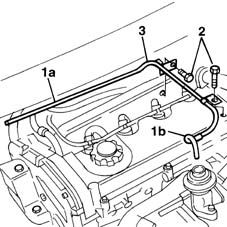

1080C58 e.g.r. system vacuum pipe - arrange
- Path
- Procedures > 10 ENGINE UNIT > 1080 EXHAUST EMISSION CONTROL SYSTEM > 1080C exhaust gas recirculation system (e.g.r.) > 1080C58 e.g.r. system vacuum pipe - arrange
- Kind
- repair procedure (removal / refitting; the operation number is the code)
- Applies to
- engines: 1.9 JTD 8V; all production periods
- Interactive page
- https://sloeber94.github.io/elrnDB-fMltpl/en/#/2891433
Applies to: engines: 1.9 JTD 8V; all production periods
 Removing
Removing
 Refitting
Refitting1016A10 sound-proofing cover - r + r
1. Disconnect the vacuum pipe from EGR solenoid (1a) and EGR valve (1b).
2. Undo the bolts.
3. Remove the EGR system vacuum pipe.

Applies to: engines: 1.9 JTD 8V; all production periods
Refitting
RemovingFit the vacuum pipe.
Connect both rubber sections of the vacuum pipe to the EGR valve and solenoid.